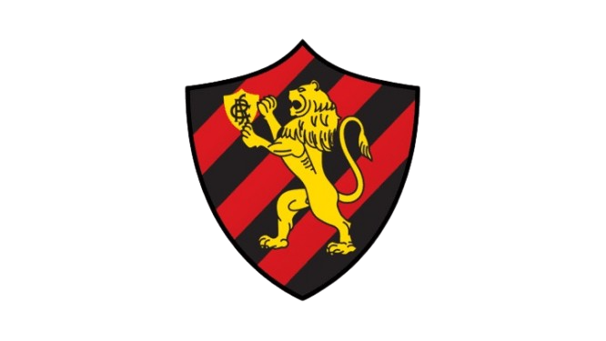

Sport Club do Recife
O Sport Club do Recife foi fundado em 13 de maio de 1905, na cidade de Recife, Pernambuco, pelo engenheiro pernambucano Guilherme de Aquino Fonseca. O clube nasceu com o objetivo de promover o esporte na capital pernambucana, com Guilherme de Aquino trazendo o apreço pelo futebol da Inglaterra, onde estudou. Suas cores oficiais são o preto e o encarnado (vermelho), e o clube é carinhosamente conhecido como "Leão da Ilha" ou "Rubro-negro".
Um mês após sua fundação, em 22 de junho de 1905, o Sport realizou sua primeira partida oficial, um amistoso contra o English Eleven, que terminou empatado em 2 a 2. O primeiro grande título do Sport veio em 1916, com a conquista do Campeonato Pernambucano.
História e Estádio
A história do Sport é marcada pela valentia e títulos, conforme a frase do fundador: "O Sport, meus amigos, será um autêntico campeão, pois nasceu sob o signo da valentia e dele jamais se apartará". O clube se destaca pela sua hegemonia no futebol pernambucano, sendo o maior campeão estadual com 44 títulos, incluindo dois pentacampeonatos (1996-2000 e 2006-2010).
O estádio do Sport é a Ilha do Retiro, inaugurada em 1937, e foi o único estádio do Norte/Nordeste a sediar jogos da Copa do Mundo de 1950. Para a construção da Ilha do Retiro, o clube chegou a vender suas taças. A rivalidade histórica do Sport é com o Náutico, no conhecido "Clássico dos Clássicos", e também com o Santa Cruz.
Nacionalmente, o Sport possui o Campeonato Brasileiro de 1987 e a Copa do Brasil de 2008, sendo o único clube do Norte-Nordeste a conquistar este último. As três estrelas no escudo do Sport representam esses dois títulos nacionais e o da Série B de 1990.
Títulos do Sport
- Campeonato Pernambucano: 1916, 1917, 1920, 1923, 1924, 1925, 1928, 1938, 1941, 1942, 1943, 1948, 1949, 1953, 1955, 1956, 1958, 1961, 1962, 1975, 1977, 1980, 1981, 1982, 1988, 1991, 1992, 1994, 1996, 1997, 1998, 1999, 2000, 2003, 2006, 2007, 2008, 2009, 2010, 2014, 2017, 2019, 2023 e 2024;
- Campeonato Brasileiro: 1987;
- Copa do Brasil: 2008;
- Campeonato Brasileiro Série B: 1990;
- Copa do Nordeste: 1994, 2000 e 2014;
- Torneio Norte-Nordeste: 1968;
- Taça Norte: 1962;
- Torneio do Nordeste: 1968 e 1970;
- Torneio Início: 1920, 1923, 1924, 1925, 1927, 1928, 1932, 1935, 1940, 1945, 1957, 1958, 1959, 1960, 1966, 1968, 1974 e 1977;
- Copa Pernambuco: 1998, 2003 e 2007;
- Copa dos Campeões Cearenses: 1995, 2014 e 2016;
- Troféu Leão do Norte: 1919;
- Supercampeonato Pernambucano: 1981.